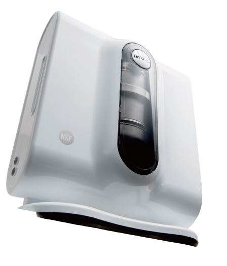
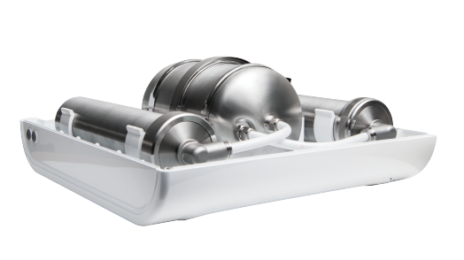

淨化
陶瓷與活性碳分工，先攔截微粒，再處理餘氯、異味與特定污染物。
 內部結構
內部結構 長筒型濾芯
長筒型濾芯 短筒型濾芯
短筒型濾芯磁化模組
產品圖片待補
從家中的原水，到每天飲用、泡茶與料理的水。
三個環節，構成 iWater 生物分子水。
陶瓷與活性碳分工，先攔截微粒，再處理餘氯、異味與特定污染物。
保留原水天然存在的鈣、鎂等溶解性礦物質，不另外添加礦物粉；含量依當地水源而異。
濾淨後再流經金字塔水磁化裝置，以磁石排列、流道與動態水流進行物理處理。
「生物分子水」是處理後用水的品牌名稱。認識 iWater 生物分子水 ↗
內部結構長筒型濾芯短筒型濾芯磁化模組
產品圖片待補往下捲動，依序探索三組核心；停下即可細讀。
從外型到接觸水的材質，
為每天的家庭用水而設計。

主要水路採 304 不鏽鋼鋼瓶，
部分快接頭使用 316 不鏽鋼。

內部結構長筒型濾芯短筒型濾芯磁化模組
產品圖片待補自來水、地下水、山泉水，或還不確定。
流理台上、壁掛或櫥下，依家中空間評估。
選擇使用人數與用途，查看初步結果。
iWater 金字塔能量活水機
以水壓推動日常濾淨。
查看剩餘水量、使用天數、出水狀態與更換提醒。綠色表示正常，橘色提示留意，紅色提示到期。
規格與顯示功能依所選機型及配置確認。完整產品資料 ↗
先確認家裡的水源與空間，讓後續使用更從容。
依資料網站 2026/09/30 所列價格。照片為結構展示，實際款式、配件與價格依選購時確認；額外配管、移機或工程另行估價。
自來水環境建議兩道濾心及 PU 水管每年更換；地下水環境建議兩道濾心每半年更換，仍需依水質與用量調整。
磁化裝置平常不需像濾心定期拆洗，有疑問時交由服務人員檢查。
確認水壓、接頭、管路及保養空間；地下水或山泉水需先評估水質與前置處理。
依官方方式清潔陶瓷濾心，換芯後按指引沖洗。漏水、接頭或管路問題由技術人員處理。
長期未使用時，先檢查鋼瓶、管線、接頭、磁化裝置及流量計，不能只靠更換濾心判斷。
污染物減量看過濾測試；水樣差異看研究條件。
氯、氯胺與 Class I 微粒子等項目。
鉛、汞、囊胞、石綿與濁度等項目。
雙酚 A、部分藥物及其他指定物質。
上述為資料網站列示的認證與測試範圍，標準編號不是等級排序。效能對應特定整機、濾心配置及測試條件，應以所選型號的現行名錄與效能表核對。
原報告使用早期 COSMIC WATER SYSTEM 名稱，並非現行機型的直接測試。數字反映該次水樣量測，不能換算成人體吸收率或證明水分子團大小。
| 水樣狀態 | 磁化前 | 磁化後 |
|---|---|---|
| 新鮮水樣 | 8.9 | 11.3 |
| 靜置 12 天 | 7.9 | 9.4 |
數據為該次特定溫度與水樣條件下的結果，不代表每次家庭用水皆有相同數值。
資料網站收錄 2001 年特定蔬果與農藥的清洗試驗、2021 年牛肉浸泡殘留測試，以及 2025 年微生物培養、大豆粕蛋白質萃取及中草藥複方 DPPH 測定。
這些結果分別對應特定食材、培養或體外萃取條件，不能概括為所有食材的清洗效果，也不能換算成人體營養吸收或抗氧化功效。
研究資料包含 RAW264.7 巨噬細胞在 LPS 刺激下的 COX-2、IL-10 觀察，以及 2021 年 30 隻雄性小鼠、為期 12 週的高脂飲食比較。
細胞與動物模型有助於提出研究問題，不能直接視為人體飲用後的抗發炎、減重或護肝效果。
研究摘要依資料網站整理，量測方法、原始圖譜與完整報告請見 水質與生物研究 ↗。
從李文濱對水與磁場的探索，到家庭飲水設備，iWater 持續累積水質研究與使用經驗。
設備名稱仍為「iWater 金字塔能量活水機」。品牌歷程 ↗